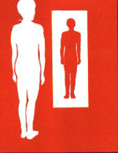

Events |
|  |
SFinX: San Francisco in Exile Featuring: |
|
Tickets: $5-$10 sliding scale |
To subscribe to the SFinX announcement list: send a blank e-mail to SFinExile_announce-subscribe@yahoogroups.com
{% include home.txt %}